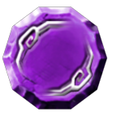

13 |
Cases |
 |
Les cases se trouvent sur la carte de jeu du plateau en mode Aventure. La case 'Carrefour'
Quand les joueurs passent sur cette case, le joueur dont c'est le tour de jouer doit choisir une direction à prendre. La case 'Réparer'
Si la voiture est endommagée et que les joueurs passent sur cette case, ils peuvent payer 500 pièces pour la réparer. La case 'Défi'
Quand la voiture s'arrête sur cette case, les joueurs doivent relever un défi. La case 'Parchemin'
Quand la voiture passe sur cette case, les joueurs peuvent acheter un parchemin. La case 'Jouez !'
Quand la voiture s'arrête sur cette case, les joueurs doivent jouer à un mini-jeu tous ensemble. La case 'Sorcier-fantôme'
Cette case n'apparaît qu'à l'entrée d'endroits bien particuliers. Quand la voiture passe dessus, le sorcier-fantôme apparaît et rapetisse tous les joueurs ! Ceux-ci peuvent ensuite entrer dans la zone en question. Si les joueurs ont déjà été rapetissés, passer sur cette case leur rendra leur taille initiale. La case vide  Quand la voiture s'arrête sur cette case, rien ne se passe. La case '-10' et la case '-20'
Quand la voiture s'arrête sur une de ces cases, les joueurs sont surpris par un fantôme et tout le monde perd 10 ou 20 pièces. La case '+20', la case '+30' et la case '+50'
Quand la voiture s'arrête sur une de ces cases, tous les joueurs reçoivent 20, 30 ou 50 pièces. |


 |
 |
 |